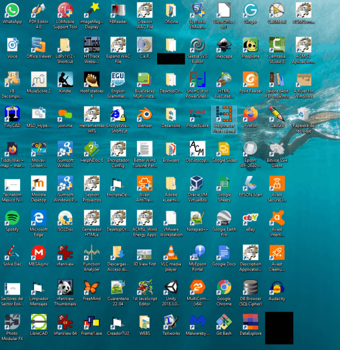

La aplicación "Desktop Organizer" ("Organizador de Escritorio", OE en este documento) fue inicialmente desarrollada para superar los inconvenientes del concepto de enlace directo en el Escritorio de Windows, y ha evolucionado incorporando las siguientes funcionalidades que facilitan el trabajo diario:
- Facilitar el acceso a documentos a través de nombres significativos.
- Facilitar el acceso a aplicaciones con parámetros particulares a través de nombres significativos.
- Agrupar ficheros y aplicaciones con criterios funcionales, independientemente de su localización física.
- Mantener información significativa sobre ficheros y aplicaciones con parámetros específicos.
- Facilitar el acceso a los ficheros y las Opciones mediante etiquetas (taxonomías) y búsquedas por texto libre.
El concepto de enlace directo en el Escritorio de Windows
La funcionalidad de los enlaces directos , también conocidos como accesos directos, en el Escritorio de Windows es ofrecer un mecanismo rápido y cómodo de acceso a ficheros y aplicaciones, independientemente de donde se encuentren localizados en el sistema de archivos. La siguiente figura muestra un Escritorio típico.

Estos enlaces directos incluyen un icono y un texto, y suelen muy intuitivos para recordarnos a qué documento o aplicación se refieren. Sin embargo presentan dos inconvenientes importantes:
a) cuando son muchos, no facilitan la búsqueda de un documento en particular, ya que, en muchos casos, el icono corresponde con la aplicación asociada al documento, con lo cual el icono es común a muchos de ellos (p.e. documentos Word, o Excel).
y
b) a menudo, el texto asociado es demasiado corto y por tanto no ayuda para discernir a qué documento está asociado.
Acceso mediante etiquetas
Vista por arbol de etiquetas
Vista para búsquedas por texto y etiquetas
Elección del procedimiento de edición
Grupos : Creación, edición y eliminación
Creación de Opciones
Menu 'Añadir Opción'
Edición de etiquetas
Editor combinado de Grupos y Opciones
Grupos: añadir, editar, borrar
Opciones: añadir, editar, borrar